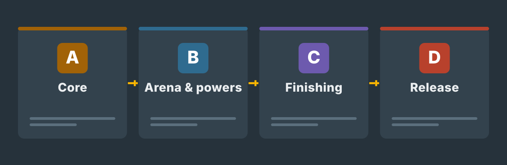

Build in the Unity project
The game itself lives in a Unity project that is in the Git repository the whole time. Scenes, scripts and prefabs sit at the repository root, documents in project-docs.
Builds do not go into Git — .gitignore handles that.Game project · 31 Aug – 4 Dec 2026
You already have the design: Ping Pong Tanks, a two-player tank arena with bouncing shells. In this project the GDD is split into tasks and built in Unity one week at a time, so that the game is playable at the end of every week. What gets judged here is the engineering — code, testing, version control and the release — not how fun the game is. The project journal is written on this page and pushed to Git every week.

Read this before week 36
You do not write the same things twice into a separate Word template. The project journal on this site is the project's plan, work diary and index of what you produced.
The game itself lives in a Unity project that is in the Git repository the whole time. Scenes, scripts and prefabs sit at the repository root, documents in project-docs.
Builds do not go into Git — .gitignore handles that.Tasks are GitHub issues. Finished work shows up as small committed changes.
One issue is usually half a day to a day of work.At the end of every week you answer three questions: what and how, why, and where the work is.
The fields are saved in this browser only.Download the whole project journal at the end of every week and replace the old file in the repository.
File:project-docs/project-journal.md. The repository is public: no personal data goes into the journal.Do this once, at the start
project-docs and its subfolders (meetings, chains) in the repository.project-docs and commit.Export your answers regularly. Browser storage does not move to another device and does not replace what is in Git.
0 / 13 weeks writtenThe printable work pack is a schedule and a checklist for situations where this page is not open. You do not need to write the same answers into it again.
The original Word template is the source material for this path. Its topics have been moved into the weekly tasks and the project journal on this site. Fill in the Word template separately only if your instructor gives you a specific instruction to do so.
Remember: the tick boxes and text fields on this site are your own working memory. They are stored in this browser only and they do not reach your instructor. A tick is not a submission. Tick a box once the work has been tested and is in the Git repository.
The original brief · issued 31 August 2026
I have read your Game Design Document for Ping Pong Tanks, and I am commissioning exactly the game it describes: a fast top-down tank arena for two players on one keyboard. My terms are simple. I am not buying a promise, I am buying a working build with its test log. Two players, one keyboard, and the tanks must feel responsive from the first week. I expect the game to be playable at the end of every single week — a little better each time — and the whole project to live in a public GitHub repository I can open whenever I want.
The design lives or dies on its core loop, so follow the GDD’s own rules to the letter: one shell per tank, endless ricochets, roughly ten seconds of life, and no point awarded if both tanks die within five seconds of each other. The bouncing shell is the soul of this game — if the ricochet feels wrong, nothing else matters. A round of Ping Pong Tanks should take seconds, not minutes — quick deaths, quick restarts. Randomly generated mazes are what keep the matches fresh — no two rounds should look the same. And chaotic power-ups keep every match fresh — but the player must always see who has what.
I will not wait until December to see the game. Halfway through, I want to see the game and decide with you what actually fits before the deadline — the GDD holds more ideas than thirteen weeks can carry, and cutting together is part of the job. When I give feedback, act on it in a branch and show me the merge: feedback only counts when I can point at the commit that answers it. When you tell me the game is chaotic but fair — that balance is proven with a test log, not with a feeling.
The MVP is due on Friday 4 December 2026. Keep the interface out of the way: low clutter — menus should get the players into the match, not stand in their way. Before you call it released, hand the build to someone outside the project on another machine: if a stranger cannot start the game from your written instructions alone, it is not released — it is just on your machine. Version 1.0 means I can hand the link to anyone at school and it just works. After that, the last week belongs to the handover — in the final week you are not building the game anymore, you are proving what you know.
Agreed implementation
Unity (the version is locked with your instructor in week 36 — the GDD’s “Unity 5” gets checked) and C#, 2D physics with Unity’s own Rigidbody and Collider components. A public GitHub repository, work tracked as issues and small commits. Arena and power-up data is kept outside the code (ScriptableObject/JSON — compared in week 40).
P0 minimum content: a two-player match, a bouncing shell, rounds and scoring with the 5 s rule, a DFS-generated 10×10 maze, three power-ups, a menu path and a released v1.0. Released as a GitHub Release (or on itch.io — the instructor decides).
Hold the scope
These are NOT built without the week 43 prioritisation decision: homing missile, cluster bomb, laser, triple shot, special tiles (water, smoke, one-way, portal), the Forest and Snow themes, sound and music, merged power-ups and online play. They are in the GDD — they are not in the MVP. Three half-finished features are worse than one finished one.
Agree these with your instructor
You do not decide these yourself and you do not decide them with AI. An empty field in the plan means “open item”, and that is the correct answer until your instructor has answered.
Graphics, sound and libraries
The GDD keeps the graphics simple: a square body, a round turret, tile textures — draw them yourself in Unity or an image editor. If you use sprite packs (Kenney, OpenGameArt), record the source and the licence in a CREDITS file. Sound only if the prioritisation picked it, sources with licences. AI does not produce P0 code and it does not make game design decisions — it may explain errors and suggest tests, and significant help goes into the AI log.
Keep the thread visible
GDD → implementation plan · week 36
The Game Design Document is already written — you do not write it again. This form derives an implementation plan from it: the P0 scope, your own technical decisions with reasoning, and the things to agree with your instructor. The pre-filled sections are taken from your GDD.
Timing: fill this in during week 36, alongside the issue backlog. Come back to it in week 43, once the review prioritisation decision has been made.

Pre-filled · included in the downloaded file
Ping Pong Tanks is a two-player top-down arena game on one keyboard. The tanks fire bouncing shells inside a procedurally generated maze. One hit destroys a tank; the survivor scores a point; if both are destroyed within 5 seconds, no point is awarded. One shell per player, lifetime about 10 s.
This section comes from your GDD — it is not rewritten.The remaining GDD power-ups, special tiles, themes, audio and online play are not part of the MVP without the week 43 prioritisation decision. They live as issues, not in the plan.
Weekly meeting on Mondays (15 min): what got finished, what is happening this week, what is stuck. Notes go in project-docs/meetings/.
P1: WASD + Space · P2: arrow keys + M. Player 2’s fire key may change based on playtests — record the change in the plan and in the GDD.
Unity version, licence, release channel and the author name in the public repository. An empty field goes into the file marked “NOT AGREED YET — open item”.
You do not decide these yourself or with AI — you ask your instructor.Getting started
This is not a separate task list. The same steps are in the week cards 36–38. The point of the first week: the GDD turns into an issue backlog and an empty Unity project compiles in the repository.
Read the brief and your own GDD side by side. Write a question list for the client: what is expected of the MVP on 4 December?
Scope P0 with your instructor: what from the GDD must be in the MVP, what is P1/P2. Record the decision.
Create the Unity project with the agreed version, a .gitignore and a public GitHub repository. Run the privacy check.
Split P0 into issues (0.5–1 day each, a done-when condition in every one). Walk the breakdown through with the game team.
An empty scene compiles and runs. Push, and the first weekly meeting note into project-docs.
How the game comes together
Open only the current week. Read the top of the week first: what is in the game after this week, what it leaves behind in the repository, and why the week exists. Do the steps in order, test the done-when condition and fill in the week's project journal.

Weeks 36–39
Guided work How to proceed
Done when: An outsider can see from the repository what is being built and in which order.
In the repo: a public repository whose README, P0 milestone and first commit say what is being built — plus the question list with answers and the meeting note in project-docs.
Guided work How to proceed
Done when: Two players can move at the same time on one keyboard without the keys interfering, and the tanks stop at a wall without jittering.
In the repo: a playable build with two tanks moving, tests T01–T02 with results in tests.md, and the movement commits.
Guided work How to proceed
Done when: The shell bounces off walls without losing speed, disappears in about 10 seconds, kills its own shooter too, and a new shell can only be fired once the previous one is gone.
In the repo: a video or image sequence of the ricocheting shell, tests T03–T05 with results, and the Projectile prefab commit.
Guided work How to proceed
Done when: A whole round works without touching the editor: destruction, a point to the right player (or to neither), and an automatic new round.
In the repo: a whole round without the editor: scoring, the 5 s rule tested (T06–T08) and the playtest note week39.md.
Weeks 40–43 · break in 42
Guided work How to proceed
Done when: Every generated 10×10 maze is traversable, the tanks start at least 3 tiles apart, and the arena size is read from data.
In the repo: the written data store comparison, the paper drawing of DFS, generated mazes and tests T09–T10.
Guided work How to proceed
Done when: Three powers work with their durations, a player can only hold one at a time, and a spectator can see both players' state from the HUD.
In the repo: three power-up assets as data, a HUD screenshot and tests T11–T12 with results.
Week 42 · 12–16 Oct
No project work and no replacement tasks. Continue in week 43 from the last working main — and remember that the client review is immediately after the break.
Guided work How to proceed
Done when: The note holds the client's own words, your interpretation separately, and a named decision. Your instructor has signed off on it.
In the repo: the review note in the client's words, the recorded prioritisation decision and the updated implementation plan.
Weeks 44–46
Guided work How to proceed
Done when: Main holds a merged PR whose description makes clear which feedback it answers; the feature works; the playtest note holds at least three shared observations.
In the repo: a merged PR that references the feedback, the playable feature, the playtest note and tests T13–T14.
Guided work How to proceed
Done when: Every row has an expectation recorded before the run and the result of the run; the three chains are complete; the pair note holds both names and observations.
In the repo: the run test matrix (≥12 rows), three complete debugging chains and the pair debugging note.
Guided work How to proceed
Done when: The game can be started, the settings changed and a match paused without touching the editor; the settings persist; the same colour cannot be picked twice.
In the repo: the playable menu path, PlayerPrefs settings persistence (T15) and the duplicate colour block (T16).
Weeks 47–49
Guided work How to proceed
Done when: The tester got through a match without spoken help; every hesitation is recorded as a fix list for the guide; the security review names the files and commits it checked.
In the repo: the RC build, the written guide, the tester's findings in their own words and the security review with references.
Guided work How to proceed
Done when: An outsider can download the release and play a match on a machine that has never had the project; the README matches the GDD; the release page states what is in and what is out.
In the repo: GitHub Release v1.0, the clean-environment test report and the final README + LICENSE.
Guided work How to proceed
Done when: Every claim has at least one exact reference; the demo stays inside its time; the self-assessment references real meeting notes.
In the repo: the finished project documentation, the collected journal and AI log, and the self-assessment in project-docs.
Every working session
Rule of thumb: if you cannot explain the change, the work is not finished.

Quality assurance
Testing is not just playing with a friend. Record the expected result, the observed result, the cause of the bug, the fix and the retest.
AI is an allowed tool
You may use AI to explain error messages, unpack Unity concepts and generate test case ideas. The game's C# code, the game design decisions and the test results are the core of this project — you produce those yourself. Every significant use of AI goes into the AI log with a reference.

Explain in your own words what the solution does and why it fits your game and its components.
Compare it against the Unity documentation and your own GDD. AI can invent fields and commands that do not exist.
Run the tests yourself. Never invent test results or feedback.
Note the significant use, your own changes, and what you learned.
Your AI log
Note: the log stored in your browser is working memory. It is included in the full project journal download. You can also download the AI log on its own and save it in project-docs.
No entries yet.
The last week
No new content gets added. Now you make sure the work is visible.
Printable schedule
The printable pack helps you follow the schedule away from this page. The actual project journal is written here and pushed to the repository's project-docs folder.
Released work
Finished v1.0 releases are added here in week 48: name, screenshot, licence and the release link.
The first releases are published in week 48.